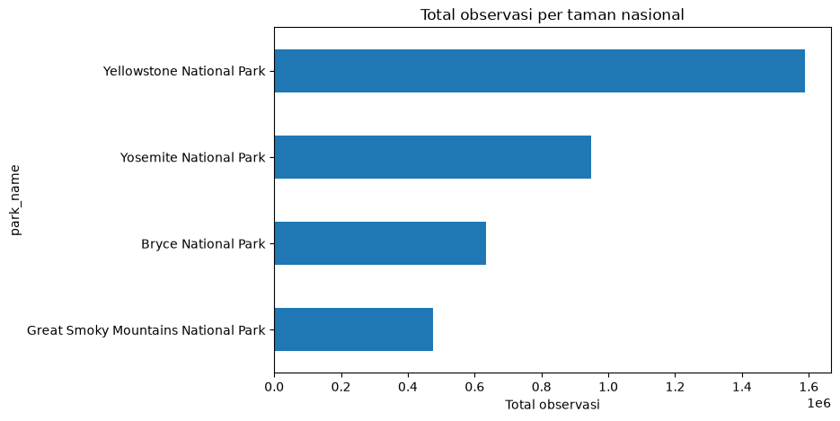

Proyek / Biodiversity in National Parks
Latihan analisis data · 2026Biodiversity in National Parks
Analisis data National Park Service tentang status konservasi spesies di empat taman nasional Amerika. Dari 5.541 spesies unik, 179 tercatat berstatus konservasi selain No Intervention.
Kode github.com/makiootol-bit/biodiversity-national-parks (buka di tab baru)
Proyek ini ada di akun GitHub kedua saya, makiootol-bit. Tiga proyek lain ada di Rolin-data.
Pertanyaan yang ingin dijawab
Ada dua pertanyaan. Pertama, kategori spesies apa yang jumlah spesies terlindunginya paling banyak. Kedua, kategori apa yang proporsinya paling tinggi dibanding jumlah spesies di kategorinya sendiri. Keduanya saya jawab terpisah karena hasilnya tidak sama. Pertanyaan inilah yang menentukan langkah berikutnya, mulai dari cara membersihkan data sampai uji apa yang layak dipakai.
Satu istilah perlu saya batasi lebih dulu. Yang saya sebut terlindungi di sini adalah
baris yang kolom conservation_status-nya bukan
No Intervention. Isinya Species of Concern, Endangered, Threatened, dan
In Recovery. Ini kategori pada data National Park Service, bukan status perlindungan
hukum.
Data yang dipakai
Datanya dari National Park Service dan dipakai sebagai bahan latihan. Ada dua berkas yang saling melengkapi.
| Berkas | Baris | Isi |
|---|---|---|
species_info.csv |
5.824 | Kategori, nama ilmiah, nama umum, status konservasi |
observations.csv |
23.296 | Jumlah kemunculan spesies di empat taman selama tujuh hari |
Empat taman yang tercatat: Yellowstone, Yosemite, Bryce, dan Great Smoky Mountains.
Satu hal yang perlu dibereskan lebih dulu. Berkas species_info.csv berisi
5.824 baris, tetapi nama ilmiah uniknya hanya 5.541. Jadi ada 283 baris berlebih dari
274 nama ilmiah yang muncul lebih dari sekali. Aturan yang saya pakai untuk memilih
baris: kalau satu nama ilmiah punya lebih dari satu status, saya pertahankan baris
yang statusnya bukan No Intervention. Kalau semuanya
No Intervention, saya ambil baris pertama. Urutan barisnya saya jaga
supaya hasilnya sama setiap kali programnya dijalankan. Karena pertanyaannya soal
spesies, analisisnya memakai versi yang sudah dibersihkan.
Cara saya mengerjakan
- Memuat kedua CSV, lalu memeriksa struktur datanya dengan
shape,info, dandescribe. - Mengisi kolom
conservation_statusyang kosong menjadiNo Intervention. - Membuang baris berlebih supaya satu nama ilmiah diwakili satu baris.
- Menghitung proporsi spesies dilindungi untuk tiap kategori.
- Menguji hubungan kategori dengan status konservasi memakai uji permutasi.
- Membandingkan total observasi antar taman nasional.
Hasil
Dari 5.541 spesies, 179 di antaranya berstatus dilindungi. Itu 3,23% saja. Sisanya masuk kategori tanpa intervensi khusus.
| Status konservasi | Jumlah spesies |
|---|---|
| No Intervention | 5.362 |
| Species of Concern | 151 |
| Endangered | 15 |
| Threatened | 10 |
| In Recovery | 3 |
| Total | 5.541 |

| Kategori | Total | Dilindungi | Proporsi |
|---|---|---|---|
| Mammal | 176 | 30 | 17,0% |
| Bird | 488 | 75 | 15,4% |
| Amphibian | 79 | 7 | 8,9% |
| Fish | 125 | 11 | 8,8% |
| Reptile | 78 | 5 | 6,4% |
| Nonvascular Plant | 333 | 5 | 1,5% |
| Vascular Plant | 4.262 | 46 | 1,1% |
Hasilnya berbeda tergantung cara membacanya. Kalau dihitung dari jumlah, burung yang paling banyak: 75 spesies. Kalau dihitung dari proporsi terhadap jumlah spesies di kategorinya, mamalia yang paling tinggi: 30 dari 176 spesies, atau 17,0%.
Uji hipotesis
Langkah berikutnya menguji apakah kategori spesies berhubungan dengan status konservasinya. Uji chi-square adalah pilihan pertama, tetapi hasilnya menunjukkan masalah: 23 dari 35 sel punya nilai harapan di bawah 5. Aturan umumnya minimal 80% sel harus bernilai 5 atau lebih, jadi uji ini tidak layak dipakai di sini.
Saya ganti dengan permutation test sebanyak 10.000 kali. Uji ini tidak menuntut syarat nilai harapan tadi.
Nilai p jauh di bawah 0,05. Kalau kategori spesies sebenarnya tidak berhubungan dengan status konservasinya, peluang munculnya pola seperti ini sangat kecil. Jadi pada data yang saya pakai, kategori spesies dan status konservasinya memang berhubungan. Yang perlu dicatat: uji ini menunjukkan adanya hubungan, bukan sebab-akibat.
Observasi per taman

| Taman nasional | Total observasi |
|---|---|
| Yellowstone | 1.443.562 |
| Yosemite | 863.332 |
| Bryce | 576.025 |
| Great Smoky Mountains | 431.820 |
Batasan
Data ini hanya mencakup empat taman dan tujuh hari pengamatan, jadi hasilnya menggambarkan keempat taman itu saja, bukan seluruh Amerika Serikat. Angka observasi juga mencatat berapa kali spesies muncul, bukan berapa banyak individunya. Kedua hal ini perlu diingat sebelum menarik kesimpulan yang lebih luas.